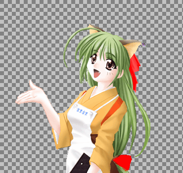

吉里吉里はアルファチャネル(透過度)を持った画像を前景画像として扱うことができます。従来用いられてきたカラーキーによる透過では、完全に透過するか、あるいは完全に不透明かの二つの状態しか扱うことができません。
アルファチャネルを用いることにより、透明部分と不透明部分のエッジをなめらかに背景と合成したり、画像中に半透明の部分を作ることができます。

カラーキーによる透過とアルファチャネルによる透過
左がカラーキー、右がアルファチャネルによる透過です。
透明部分とのエッジを拡大してみるとわかると思います。また、右側ではリボンを半透明にすることができています。